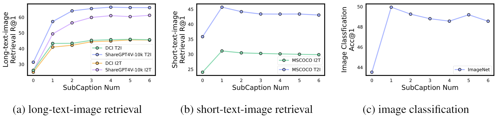

Benefits and Drawbacks from Long Captions in Pre-training

The impacts of long v.s. short captions on image-language pre-training. Training with short text-image pairs leaves certain tokens (e.g., garden token) easily overshadowed by salient tokens (e.g., castle token). long captions-image pairs can help bring the overshadowed tokens back into the light.

As the length of text (the number of sub-captions) increases, the performance of the pre-trained model on long-text-image retrieval consistently improves and becomes stable. However, there is degradation in the retrieval task and classification when the model is trained with longer text.